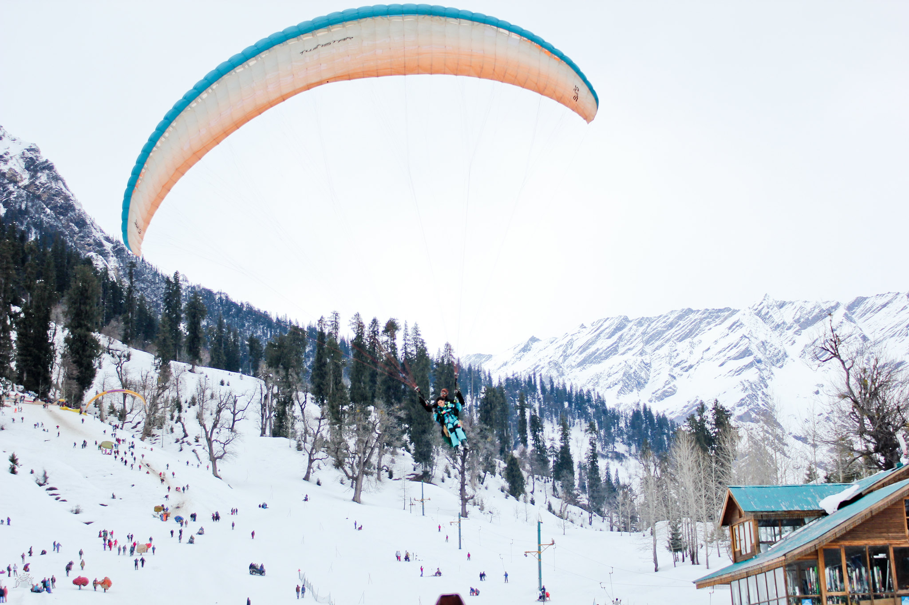

Welcome to Explore World
Home |
Destinations |
Gallary |
Contact
GOA
Goa is a famous beach state in india.
it is known for its beautiful beaches,
churches and nightlife.
 |
|
Baga Beach
is a popular beach and tourist destination in North Goa.[1][2] Baga is located at the north end of the contiguous beach stretch that starts from Sinquerim, Candolim, leads to Calangute, and then to Baga.
 |
|
Old Goa Church
Construction work on the church began in 1594. The church was consecrated in May 1605 by the archbishop, Dom Fr. Aleixo de Menezes. This world heritage monument has emerged as a landmark in the history of Christianity.
 |
|
Night Life View
The city has so much to offer, from beaches to pubs to discotheques and much more. Read on to discover the best places to visit in Goa at night.
MANALI
Often referred to as the ‘honeymoon capital of India’, Manali is nestled in the mountains of the Indian state of Himachal Pradesh near the northern end of the Kullu Valley. Situated at a height of 6726 feet above sea level in the Beas River Valley, this Himalayan resort town has a reputation as a backpacking center and honeymoon destination.
 |
|
Bease kund
Located in the Dhauladhar Range of the Himalayas, Beas Kund is not just a beautiful place but also a place of immense historical significance. Beas Kund in Manali is the spot from where the River Beas originates, thereby marking it as a sacred spot.
 |
paragliding
Overcome your fear of heights with paragliding in Manali and fly through blue skies and over most stunning landscapes. It is one of the most popular and famous spots for paragliding in India. People from all over the country come to get their adrenaline pumping. The average duration of paragliding could be from 8 to 30 minutes depending on the force of the wind.
JAIPUR
jaipur was founded in 1727 by Sawai Jai Singh II, the Kachhwaha Rajput ruler of Amer, after whom the city is named.[12] It is one of the earliest planned cities of modern India, designed by Vidyadhar Bhattacharya
 |
|
Hawa_Mahal_Jaipur
Hawa Mahal or the 'Palace Of The Winds' located in the heart of the beautiful Pink City of Jaipur in Rajasthan, India, is one of the most famous tourist attractions and a prominent landmark of the city that is renowned for its rich cultural and architectural history.
KERALA
Kerala, southwestern coastal state of India. It is a small state, constituting only about 1 percent of the total area of the country.
 |
|
Traditional Dance View
Most traditional dances of Kerala pertain to the great Indian epics—the Mahabharata and the Ramayana—or to the honouring of specific Hindu deities.
© 2025 Explore World | All Rights Reserved